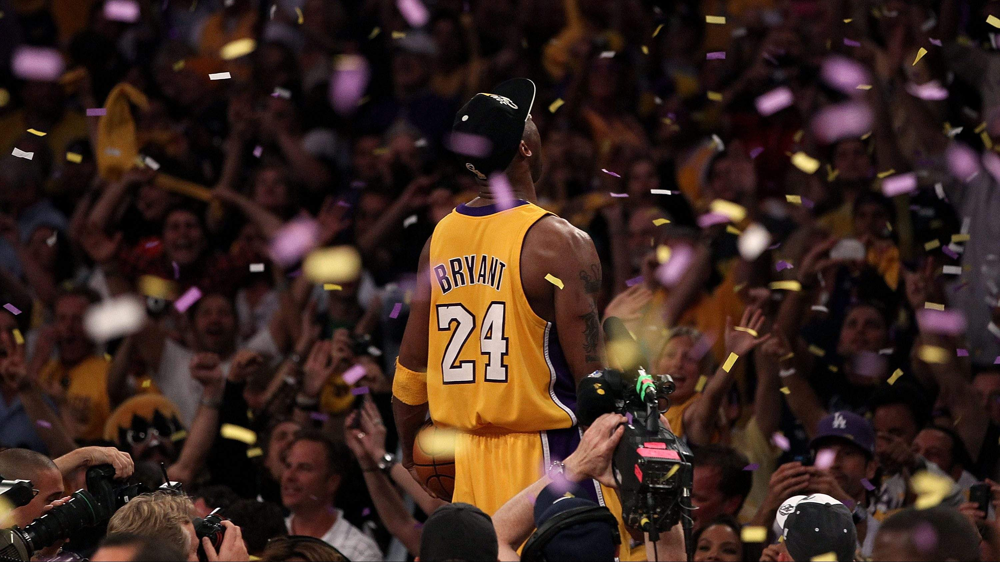
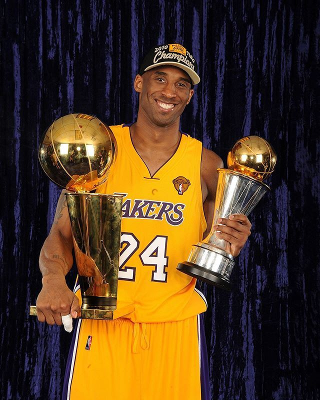

Basketball is my favorite sport. There is nothing I love more than watching a good NBA game. My favorite player is Kobe Bryant. I watched him when I was just starting to get introduced to the sport. Although he has unfortunately passed, I believe his legacy still lives on. He is in all honesty the biggest idol in my life. This is a picture of him. 
In this Blog, I will first list my opinions of Kobe, and then I will put up some facts. So first, I will put some of my own opinions. Again, these are my opinions and if you disagree I would love to have this debate. I understand my opinions are controversial but let me put some context to my opinion. So first, I was always one of the tallest people in my school so from the get-go I was put into basketball. I never really took the time to watch the game and see the beauty of it so I honestly did not care too much about it. However, things all changed for me in 2008. I was at a sports facility getting in shape since I was overweight as a child and as I waited for my parents to pick me up I watched the TV. It happened to be the 2008 NBA finals which featured the Boston Celtics and the Los Angeles Lakers. The Celtics bested the Lakers in 6 games but everyday I went to the camp, I watch Kobe Bryant put in work. I was so amazed by his unbeleivable skill set and talent. That’s when I fell in love with basketball. I went home and pulled up YouTube videos of him and I watched hours of highlights and games. I spent the next years immersing myself in the sport. I lived and breathed NBA basketball from that moment on. I always went out of my way to stay up late to watch Kobe and the Lakers since they played in west they always had their games at 7-8 PST. I learned a ton from watching him and became a pretty damn good basketball player myself. However, the best thing that Kobe did for me was change my outlook on life and my attitude. In all honesty, I was a lazy kid, but from watching Kobe play and reading about him I learned to work hard and give it my all. I believe I am an incredibly hard worker and I always strive to be the best that I can be. So ya, this guy is an all-time legend but to me it was more than that. So without further ado, these are some of my opinions of him:
print("Kobe Bryant is the greatest basketball player I have ever seen")## Kobe Bryant is the greatest basketball player I have ever seenprint("Kobe Bryant is the greatest Laker of all-time")## Kobe Bryant is the greatest Laker of all-timeprint("Kobe Bryant is the greatest clutch player of all-time in NBA history")## Kobe Bryant is the greatest clutch player of all-time in NBA historyprint("Kobe Bryant is the most skilled basketball player of all-time")## Kobe Bryant is the most skilled basketball player of all-timeprint("Kobe Bryant had to face the toughest competition being in the western conference but somehow ended up being a 5-time world champion")## Kobe Bryant had to face the toughest competition being in the western conference but somehow ended up being a 5-time world championprint("Kobe Bryant is the best 2-way player of all time. Meaning offense and defense")## Kobe Bryant is the best 2-way player of all time. Meaning offense and defenseThese are my opinions, but they mean nothing without facts. Let’s get into some basic facts about Kobe. I wont throw in any numbers or advanced statistics. I can provide all that in a later blog post, but for now, these are some facts about Kobe Bryant that I think you all should know:
library(reticulate)
kobe <- "5 NBA Championships"
kobe1 <- "2 NBA Finals MVP Awards"
kobe2 <- "1 NBA MVP Award"
kobe3 <- "4th All-time Leading Scorer in NBA History"
kobe4 <- "Most Game Winners in NBA History"
kobe5 <- "Played 20 Seasons with the Lakers, Most in Franchise History"
kobe6 <- "Came to the NBA Straight Out of High School"
kobe7 <- "2 Regular Season Scoring Titles"
kobe8 <- "Has Eliminated the Most 50+ Win Teams in the Post-Season. That number is 25"
kobe9 <- "Won the 1997 NBA Slam Dunk Championship at All-Star Weekend"
kobe10 <- "Has the Most All-Star Game MVPs of All-Time with 4"
kobe11 <- "18 Time All-Star"
kobe12 <- "15 Time All-NBA; 11-Time All-NBA First Team"
kobe13 <- "12 Time All-NBA Defense; 9 Time 1st Team All-NBA Defense"
kobe14 <- "2 Time Olympic Gold Medalist"print(r.kobe)## 5 NBA Championshipsprint(r.kobe1)## 2 NBA Finals MVP Awardsprint(r.kobe2)## 1 NBA MVP Awardprint(r.kobe3)## 4th All-time Leading Scorer in NBA Historyprint(r.kobe4)## Most Game Winners in NBA Historyprint(r.kobe5)## Played 20 Seasons with the Lakers, Most in Franchise Historyprint(r.kobe6)## Came to the NBA Straight Out of High Schoolprint(r.kobe7)## 2 Regular Season Scoring Titlesprint(r.kobe8)## Has Eliminated the Most 50+ Win Teams in the Post-Season. That number is 25print(r.kobe9)## Won the 1997 NBA Slam Dunk Championship at All-Star Weekendprint(r.kobe10)## Has the Most All-Star Game MVPs of All-Time with 4print(r.kobe11)## 18 Time All-Starprint(r.kobe12)## 15 Time All-NBA; 11-Time All-NBA First Teamprint(r.kobe13)## 12 Time All-NBA Defense; 9 Time 1st Team All-NBA Defenseprint(r.kobe14)## 2 Time Olympic Gold Medalist
So, you tell me. What does Kobe Bryant mean to you?